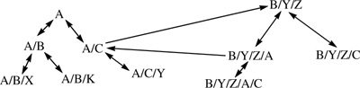

Networking Security Networking Security Networking Security Security Networking Security Networking Security Networking Charlie Kaufman Radia Perlman Mike Speciner Prentice Hall Network Security: Private Communication in a Public World, Second Edition Networking Security Networking Security Networking Security Security Networking Security Networking Security Networking Charlie Kaufman Radia Perlman Mike Speciner Prentice Hall Network Security: Private Communication in a Public World, Second Edition
15.3. PKI Trust Models
Suppose Alice wants to send an encrypted email message to Bob. She needs to securely find out Bob's public key. The PKI trust model defines where Alice gets her trust anchors, and what paths would create a legal chain from a trust anchor to the target name ("Bob" in this example).
15.3.1. Monopoly Model
In this model, the world chooses one organization, universally trusted by all companies, countries, universities, and other organizations to be the single CA for the world. The key of that one organization is embedded in all software and hardware as the PKI trust anchor. Everyone must get certificates from it. This is a wonderfully simple model, mathematically. This is the model favored by organizations hoping to be the monopolist. However, there are problems with it:
There is no one universally trusted organization. Given that all software and hardware would come preconfigured with the monopoly organization's key, it would be infeasible to ever change that key in case it were compromised, since that would involve reconfiguration of every piece of equipment and software. It would be expensive and insecure to have a remote organization certify your key. How would they know it was you? How would you be able to securely send them your public key? Although transmission of the public key does not require secrecy, it requires integrity. Otherwise the CA could be tricked into certifying the public key as yours. Once enough software and hardware was deployed so that it would be difficult for the world to switch organizations, the organization would have monopoly control, and could charge whatever it wanted for granting certificates. The entire security of the world rests on that one organization never having an incompetent or corrupt employee who might be bribed or tricked into issuing bogus certificates or divulging the CA's private key.
15.3.2. Monopoly plus Registration Authorities (RAs)
This model is just like §15.3.1 Monopoly Model except that the single CA chooses other organizations (known as RAs) to securely check identities and obtain and vouch for public keys. The RA then securely communicates with the CA, perhaps by sending signed email with the information that would go into the certificate, and the CA can then issue a certificate because it trusts the RA.
This model's advantage over the §15.3.1 Monopoly Model is that it is more convenient and secure to obtain certificates, since there are more places to go to get certified. However, all the other disadvantages of the monopoly model apply.
RAs can be added to any of the models we'll talk about. Some people believe that it is better for their organization to run an RA and leave the operation of the CA to an organization more expert at what it takes to be a CA. However, in practice, the CA just rubber-stamps whatever information is verified by the RAs. It is the RA that has to do the security-sensitive operations of ensuring the proper mapping of name to key. The CA might be better able to provide a tamper-proof audit trail of certificates it has signed.
15.3.3. Delegated CAs
In this model the trust anchor CA can issue certificates to other CAs, vouching for their keys and vouching for their trustworthiness as CAs. Users can then obtain certificates from one of the delegated CAs instead of having to go to the trust anchor CA.
The difference between a delegated CA and an RA is whether Alice sees a chain of certificates from a trust anchor to Bob's name, or sees a single certificate. Assuming a monopoly trust anchor, this model has security and operational properties similar to §15.3.2 Monopoly plus Registration Authorities (RAs). Chains of certificates through delegated CAs can be incorporated into any of the models we'll discuss.
15.3.4. Oligarchy
This is the model commonly used in browsers. In this model, instead of having products preconfigured with a single key, the products come configured with many trust anchors, and a certificate issued by any one of them is accepted. Usually in such a model it is possible for the user to examine and edit the list of trust anchors, adding or deleting trust anchors. It has the advantage over the monopoly models that the organizations chosen as trust anchors will be in competition with each other, so the world might be spared monopoly pricing. However it is likely to be even less secure than the monopoly model:
In the monopoly model, if the single organization ever has a corrupt or incompetent employee, the entire security of the world is at risk. In the oligarchy model, though, any of the trust anchor organizations getting compromised will put the security of the world at risk. It is of course far more likely that at least one of n organizations will wind up with a misused key when n is bigger than 1. The trust anchor organizations are trusted by the product vendor, not by the user. Why should the vendor decide whom the user should trust? Also, how does the vendor choose which organizations to trust? You'd like to assume that there is some elaborate procedure by which the vendor evaluates the trustworthiness of the organization before adding its key to the trust anchor set. The policy is at the discretion of the vendor, and some vendors have chosen to include any organization willing to pay for the privilege of being included in the preconfigured trust anchor set. It might be easy to trick a naive user into adding a bogus trust anchor into the set. This depends on the implementation. One could imagine an implementation that, upon seeing a certificate signed by an organization that wasn't in the set, would show the user a pop-up box saying, Warning. This was signed by an unknown CA. Would you like to accept the certificate anyway? (The user will almost certainly say OK.) Would you like to always accept this certificate without being asked in the future? (OK.) Would you like to always accept certificates from the CA that issued that certificate? (OK.) Would you like to always accept certificates from any CA? (OK.) Since you're willing to trust anyone for anything, would you like me to make random edits to the files on your hard drive without bothering you with a pop-up box? (OK.) (You might want to see how many of these questions your browser asks, and it would be an interesting psychology exercise to see how outrageous you can be before a user stops clicking OK.) Note that if a user is sufficiently sophisticated and careful, she can ask for information about the certificate before clicking OK to accept it. She will be informed of the name of the signer, say Mother Teresa (the most trustworthy imaginable signer). But this does not necessarily mean it was really signed by Mother Teresa. It just means that whoever signed it (say SleazeInc) put the string Mother Teresa into the ISSUER NAME field. Users will not understand the concept of trust anchors. If they have been assured that the application they are using does encryption, they will assume that it will be secure even if they're using a public workstation, perhaps in a hotel room or at an airport. Although it will always be an issue if a user can be tricked into using a public workstation with malicious code, it would be easier for the previous user of the workstation to modify the set of trust anchors and the proxy to be used (probably not a privileged operation) than to change the software. There is no practical way for even a knowledgeable user to be able to examine the set of trust anchors and tell if someone has modified the set. Browsers today come shipped with about 80 trust anchors. You can examine them by name, but someone could delete the key of TrustworthyInc, and put in a new key claiming that it belongs to TrustworthyInc. You might even be able to look at digests of the keys, but what user will be sufficiently paranoid to have printed out all the message digests of the 80 or so trust anchors that get shipped with the application and compare them with the configured set?
15.3.5. Anarchy Model
This is the model used by PGP. Each user is responsible for configuring some trust anchors, for instance, public keys of people he has met and who have handed him a business card with a PGP fingerprint (the message digest of the public key), and sent him email containing a public key with that digest. Then anyone can sign certificates for anyone else. Some organizations (for instance, MIT does this today) volunteer to keep a certificate database into which anyone can deposit certificates. To get the key of someone whose key is not in your set of trust anchors, you can search through the public database to see if you can find a path from one of your trust anchors to the name you want. This absolutely eliminates the monopoly pricing, but it is really unworkable on a large scale:
The database would get unworkably large if it were deployed on Internet scale. If every user donated, say, ten certificates, the database would consist of billions of certificates. It would be impractical to search through the database and construct paths. Assuming somehow Alice could piece together a chain from one of her trust anchors to the name Bob, how would she know whether to trust the chain? So, Carol (her trust anchor) vouches for Ted's key. Ted vouches for Gail's key. Gail vouches for Ken's key. Ken vouches for Bob's key. Are all these individuals trustworthy?
As long as this model is used within a small community where all the users are trustworthy, it will work, but on the Internet scale, when there are individuals who will purposely add bogus certificates, it would be impossible to know whether to trust a path. Some people have suggested that if you can build multiple chains to the name that you can be more assured of the trustworthiness. But once someone decides to add bogus certificates, he can create arbitrary numbers of fictitious identities and arbitrary numbers of certificates signed by those entities. So sheer numbers will not be any assurance of trustworthiness.
15.3.6. Name Constraints
The concept of name constraints is that the trustworthiness of a CA is not a binary value where a CA would either be completely untrusted or trusted for everything. Instead, a CA should only be trusted for certifying some subset of the users. For instance, MIT's CA, most likely managed by playful undergraduates, should be trusted for certifying name/key binding of MIT students, but not for certifying the key of, say, president@whitehouse.gov.
Assuming users have hierarchical names, such as radia@alum.mit.edu, it is easy to specify a policy for trusting the MIT CA. The MIT CA should be trusted for certifying names in the namespace under mit.edu, but not names of the form foo@harvard.edu. Although I2 might be a Sun employee, you would not trust the Sun CA to certify the name radia@alum.mit.edu. But you would trust the Sun CA to certify the name radia.perlman@sun.com. The name by which you know someone determines whom you trust to certify that name. Users might have multiple names. The PKI doesn't care. Each name is a separate PKI entity. They might use the same public key, in which case someone might happen to notice that radia@alum.mit.edu and radia.perlman@sun.com are most likely the same individual because the two entities have the same public key. Or I2 might use different keys for my2 different identities.
15.3.7. Top-Down with Name Constraints
This model is similar to the monopoly model in that everyone must be configured with a pre-ordained, never changing root key, and that root CA delegates to other CAs. However, the delegated CAs are only allowed to issue certificates for their portions of the namespace. In this model it is easy to find the path to a name (just follow the namespace from the root down). But it has the other problems of the monopoly model, in that everyone has to agree upon a root organization, and that organization and its key would be prohibitively expensive to ever replace.
15.3.8. Bottom-Up with Name Constraints
This model is not deployed, although the design of Lotus Notes is close (see §24.5 Lotus Notes Security). It was originally proposed for Digital's security architecture in the late 1980s (see §24.4 DASS/SPX). We believe this model, or something close to it, will better serve the Internet because of the reasons we give at the end of this section. The philosophy of this model is that each organization can create its own PKI and then link to others. The model assumes a hierarchical namespace in which each node is represented by a CA. Not only does the parent certify the child's name, but the child certifies the parent's name. In other words, .edu would certify mit.edu, and mit.edu would certify .edu. In addition to up-links (where the child certifies the parent) and down-links (where the parent certifies the child), cross-links are allowed, where a cross-link is a link from any node to any other node where neither is an ancestor of the other. (See Figure 15-1.) The certificate by which one node creates a cross-link to another node is known as a cross-certificate.

Note that with links in both directions (from child to parent and from parent to child), it is possible to navigate the namespace starting from any node. Instead of using the root as your trust anchor, you can start anywhereÂthe uppermost key within your own organization, or even your own key! If the trust anchor is your own key, the only thing you need to know a priori is your own key pair. If the trust anchor is something other than your key, you also need to know the trust anchor's public key.
We define an ancestor of a name to be any prefix of that name (where the strings delimited by slashes are considered atomic), including the name itself. To find a path to a target, start at your trust anchor. If it is an ancestor of the target name, go down from there to the name. If not, look for a cross-certificate to an ancestor of the target. If you don't find a suitable cross-certificate, go up to the parent, look for cross-certificates to an ancestor of the target, and so forth, until you either find a suitable cross-certificate or get to the least common ancestor of the trust anchor and the target. (The least common ancestor is the node with the longest name which is a prefix of both names.) Once at an ancestor of the target, just follow down-links to the target.
The rule is you follow up-links as far as necessary (until you encounter a cross-link to an ancestor of the target at or below the least common ancestor, or until you reach the least common ancestor), then you follow at most one cross-link, and then you follow down-links from there. Without cross-links, the set of CAs you must trust are all your ancestors and all the target's ancestors up to the least common ancestor. With cross-links, the set of CAs that you must trust is a subset of that.
So for instance, imagine user A/B/X in Figure 15-1 wishes to find the key of user A/C/Y, and user A/B/X uses her own key as her trust anchor. So she looks in the directory under her own record (A/B/X) for cross-certificates. Since there are none, she goes up to her parent (A/B) and looks for cross-certificates. Since there are none, she goes to its parent (A), and at that point she has reached the least common ancestor, so she can go down to the target name.
Now suppose A/C/Y wants to find the key of B/Y/Z/C. She'd go up to her parent (A/C), and then follow the cross link to B/Y/Z, and then go down to B/Y/Z/C.
But there is no path back from B/Y/Z/C to A/C/Y since the PKI does not go up to a common ancestor of those two names, and there is no cross link from an ancestor of B/Y/Z/C to an ancestor of A/C/Y. It might look as though B/Y/Z/C could go up one level to B/Y/Z, and then down to B/Y/Z/A from which there is a cross link to A/C. In order to be able to find such a path, the search rules would be very complex, since each link would have to be followed in case it led to a cross link to the target name. But a thornier issue is whether to trust any intermediary other than the CAs up to a common ancestor. If the trust rules are clear, e.g., only CAs along the name path are trusted, then it's easy to find and blame the compromised CA, and it's also easy to know what damage can be caused by a given CA's being compromised. If you trust any CA for anything it won't be secure. If you have any rule between those two extremes, the security becomes very complicated to configure.
If it were important for there to be a path from B/Y/Z/C to A/C/Y, then B/Y/Z/C or one of its parents would create a cross link to A, A/C, or A/C/Y. Eventually organizations would tire of maintaining many cross-links. At that point there arises a business opportunity to provide inter-organization connectivity (which we'll call root service), but in competition with other organizations providing root service. An organization that offers root service would advertise its rates, how much liability it is willing to assume, would explain its policies and procedures for how carefully it checks information before issuing a certificate, and so forth.
We like this model. It was originally proposed for Digital's security architecture in the late 1980s. With the trust anchor being the uppermost key in one's own organization, it is similar to the PKI for Lotus Notes, and the bridge CA model used for the Federal PKI. The bridge CA is simply a CA that certifies and is certified by the uppermost CA in each organization. The advantages of this model are:
It is easy to find out if a path exists. The policy of assuming that the name by which something is known implies whom you'd trust to certify the name is something people can understand, and is sufficiently flexible and simple that it might actually work. PKI can be deployed in any organization independently of the rest of the world. There is no reason to pay a commercial CA for certificates. There is no reason to wait for the entire world-encompassing PKI to get put into place before you can use PKI in your own organization, or between a few organizations. Since authentication paths between users in your own organization never go outside of your own organization, security of what is presumably the most security-sensitive operationÂauthenticating users in your own organizationÂis entirely in your own hands. Compromise of any CA outside of your own organization will not allow anyone to impersonate one of your own users to your own services. Replacing any key is reasonably easy. For instance, assume that a few companies offering root service successfully manage to acquire a large customer base. If a root service's key gets compromised, then it only affects the top CA of each of the root service's customers. Each such CA has to revoke the old certificate it issued to the root service and issue a new certificate containing the new key, and automatically all the users in the CA's subtree are using the new key in place of the old key. No organization gets so entrenched that it can start charging monopolistic prices. Competition is always possible. Configuration is very easy. At the very least you need to know your own key pair. With this PKI model, that is all you need to know, since all the other CAs can be reached by paths starting with your own key. Your private key might be carried on a smart card; for other methods of obtaining your private key, see §12.4 Strong Password Credentials Download Protocols. To use a key other than your own as the trust anchor, for instance the uppermost key in your organization, you will need to also know the public key of that trust anchor.
How would this be deployed? Suppose an organization, say finance.east.bigorg.com, deploys PKI-based security using this model. When someone, say Joe, is hired into that organization, he visits the CA operator. This is just another step in the process of getting hired, like visiting the badge-making office. Joe obtains a public key pair, perhaps by generating it on his own machine or obtaining a smart card. Given that the CA (like the badge facility) is probably on site, it is easy for him to physically meet the CA operator and be introduced by someone the CA operator knows. It is therefore secure and convenient for him and the CA to certify each other's public keys. Then the up-link certificate can be stored in a directory so that Joe can plug his smart card into any workstation and search the directory for all the other certificates he will need.
Joe may have a life other than as an employee. He might get another certificate (and name and virtual identity) from his ISP for email and from his credit card company for securely ordering things. He could decide which identity to use for any particular activity. These identities might or might not use the same public key. There may be no way of knowing when two different entities in the PKI namespace happen to map to the same carbon-based life form.
15.3.9. Relative Names
Relative names is another useful concept found in DASS/SPX, useful because if an entire subtree of the namespace moves, most of the certificates do not need to be reissued. This is done by having certificates carry relative names rather than absolute names. That means that instead of putting in the entire name joe.finance.east.bigorg.com, the down-link certificate (the one from parent to child) would carry the name joe. Now, in case the company reorganizes, so that finance is moved up under bigorg.com (so it is now finance.bigorg.com), only the new certificates between bigorg.com and finance.bigorg.com need to be issued. All the certificates for the subtree under finance would remain the same.
With relative names, a child certificate would carry only the component which is the extension of the parent's name. A parent certificate would not carry a name at all, but instead say this is my parent. There is an interesting issue with what to put into a cross-certificate. There are two possibilities. One possibility is to put an absolute name into a cross-certificate. That way if the issuer's portion of the namespace gets moved, but the subject's portion hasn't changed, then the certificate will still be valid. The other possibility is to put in a relative name (like ../../B/C), in which case the certificate would remain valid if a branch of the namespace containing both names were moved as a whole (see Homework Problem 2).
Although relative names have some attractive properties, there are some very complex issues, such as what name to put into a cross-link and how an entity learns its own name. Since nothing with relative names has been deployed, it would be an interesting area to study. SDSI and SPKI (RFC 2693 SPKI Certificate Theory) present a design that uses a form of relative names.
15.3.10. Name Constraints in Certificates
The certificate format adopted by PKIX (see §15.6 PKIX and X.509) has a field called NAME CONSTRAINTS, which allows the issuer to specify what names the subject is trusted to certify. The field can contain allowed names and disallowed names. PKIX certificates can be used to build any of the models we've mentioned. To build the bottom-up model, a child or cross-certificate would specify that the subject was only allowed to certify names in the subtree below the subject's name. A parent certificate would contain the constraint any names except myself and below.
We'd still recommend mostly building the bottom-up model, but there is some amount of flexibility that the strict up*  cross once  down* algorithm might not give. For instance, an organization might have a cross-link to other-org.com, but realizing that other-org.com also keeps cross-certificates to yet-another.com and still-another.com, the name constraint in the cross-certificate might say that the subject would be trusted to certify names in the namespaces of any of other-org.com, yet-another.com, and still-another.com. Or there might be several root organizations that all cross-certify each other, with each having certified some subset of the organizations. Since two organizations might not have been certified by the same root, it might be necessary to go up to the root, then find a path across the roots to the target's root, and then go down. This could be accomplished by having roots cross-certify each other using the name constraint trusted for all names. The further one gets from the bottom-up model, and the closer one gets to the anarchy model, the more complex it will be to search all valid paths.
15.3.11. Policies in Certificates
The PKI in PEM (see Chapter 21 PEM & S/MIME) had built-in policies. The PEM PKI consisted of a single root CA which certified multiple hierarchies, each with its own policy. Some hierarchies had pre-defined (by the standards body) policies. PEM allowed future hierarchies with different published policies. If you wanted to get certified in a particular hierarchy you had to follow the policies of that hierarchy, and you could only get certified in one hierarchyÂthe one whose policies you followed. Policies were intended to be things like how carefully you checked identity before issuing a certificate and how often you administered drug tests to the CA operators (see §21.5 PEM Certificate Hierarchy). The PEM PKI was a failure and was never substantially deployed, in part because of its rigidity.
PKIX provides certificate extensions for policies, intended to support something along the lines of what the PEM hierarchy designers envisioned. Instead of defining what the policies are, PKIX allows for putting in OIDs, which are hierarchically assigned globally unique identifiers. The meaning of these is not standardized. Anyone can obtain an OID and define it to mean anything.
Policies don't have values associated with them. So, for instance, if what you want is a policy for security level, you couldn't say policy = security level, value = confidential. Instead, you'd have to choose separate OIDs for each level of security, for example an OID for top secret, a different OID for secret, and yet another for confidential. If you want a certificate chain where every link in the chain is at least secret, then the top secret links would have to specify they meet confidential, secret, and top secret policies. It is not possible for the application to say that each link in the chain can be either secret or top secret. Instead there has to be a chain that has the same OID in each certificate.
To further complicate things, it is possible, assuming two organizations are using OIDs for similar enough policies that they are willing to consider them equivalent, the cross-certificate from one organization to the other can contain mapping rules such as OID1=OID2. That means that if a chain which must contain OID1 in the first organization crosses into the other organization's PKI, all subsequent certificates in the chain must contain OID2.
The way policies are processed in a chain is that the application specifies what policy OIDs, if any, it wants to see in certificates. For example, the application might specify OID1 or OID2 or OID3. A chain must have the same OID in every link. So for instance, even if the application doesn't care whether it's OID1 or 2 or 3, if the first certificate in the chain contains only OID2 and the next certificate in the chain contains only OID3, then the chain is not valid. If the first certificate contains OID1 and OID2 and the next one contains OID2 and OID3, then the chain so far is valid, but every subsequent certificate in the chain must now contain OID2, since that was the only acceptable OID that was contained in both of the first two certificates.
If policy mapping happens in the middle of the chain, and OID2 is declared equivalent to OID5, then (assuming OID2 needed to be in all the remaining certificates in the chain) OID5 must appear in all the remaining certificates in the chain.
These rules are somewhat arbitrary, and whether people wind up using the PKIX policies in any useful way remains to be seen.
|